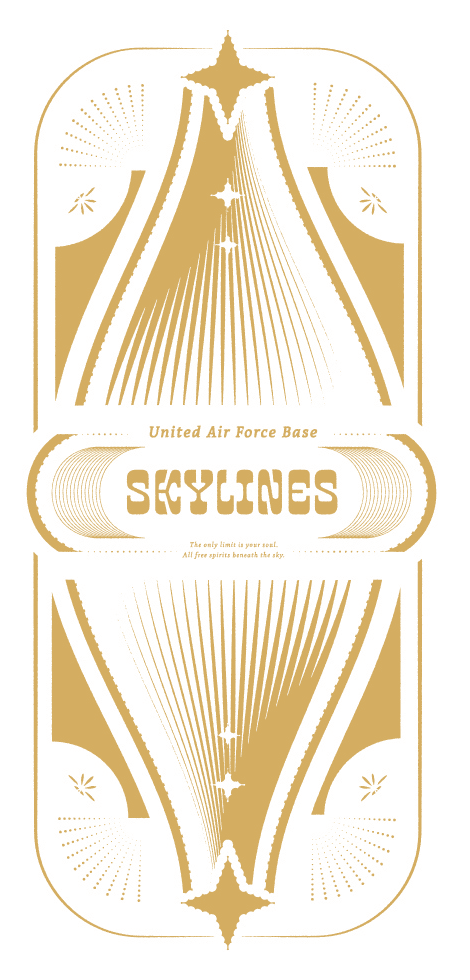
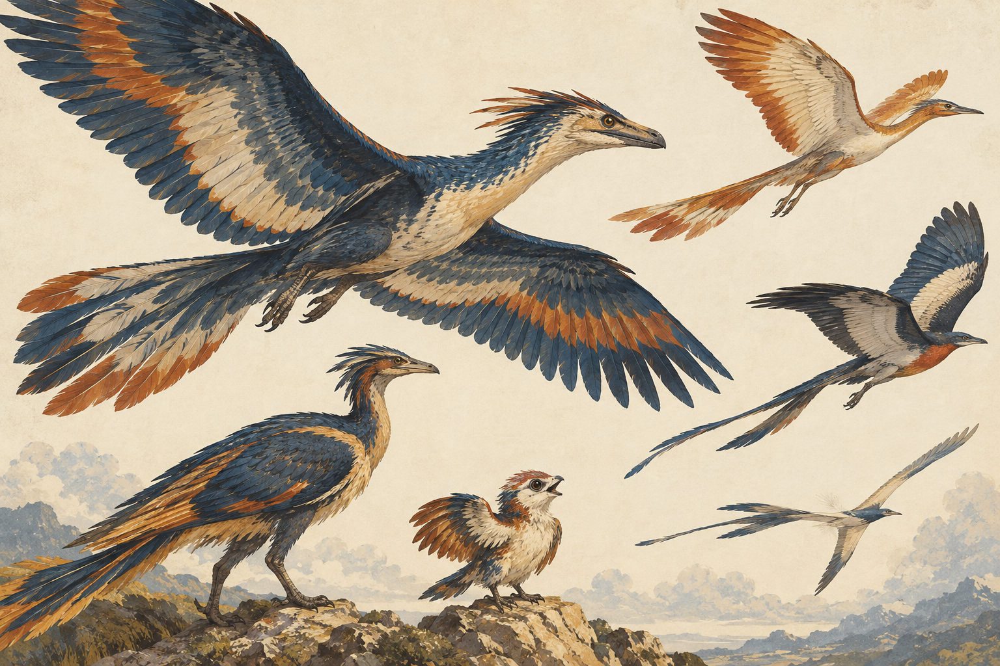

科技重整
地球磁場異變使電磁波變得難以運用，既有的科技與通訊方式受到衝擊，科技發展也因此面臨需要重新調整的困境。

90年前，地球的磁場與重力突然發生改變，高空環境與生態也隨之產生變化，巨型突變飛行生物「毛毛」（Feeser）因此出現⋯⋯
為了防禦與適應這場新型天災，聯合政府陸續於各地設立應變中心，而天際線基地（SKYLINES）也在美國西岸成立。
WORLD ENVIRONMENT
地球磁場與重力發生異變
技術參考1990年代末期的科技程度
僅為技術氛圍參考，非故事實際西元年代BRAVITY
地球磁場與重力改變之後，人類將這種新的重力環境稱為「Bravity 新重力」。
平地重力約為 1.1G，對基本日常生活影響不大。
一般飛行高度則約為 1.5G，越往高空，新重力指數型增加，並會受到天氣變化影響而產生波動。
新的高空環境會使飛行更加困難，原有的飛行方式也因此受到限制，一般人可能會因重力變化而感到不適，情況嚴重時甚至可能昏厥。
地球磁場異變使電磁波變得難以運用，既有的科技與通訊方式受到衝擊，科技發展也因此面臨需要重新調整的困境。
主要的無線電頻寬統一被公共管理，並有一定的使用限制，可供民眾使用的無線電頻寬也相當有限，由於這些條件，於是改變了人們的通訊方式。
聯合政府主張民主與兼容並蓄。
為了防禦與適應地球環境異變所帶來的新型天災，聯合政府陸續於各地設立應變中心，所有應變中心皆直接隸屬於聯合政府。
位於美國西岸的天際線基地（SKYLINES），便是其中之一。
FLIGHT & HUMAN PHYSIOLOGY
BR 基因序列是先天隨機出現的基因表現，與遺傳無關，發生率約為 25%。這項特徵不會因年齡增長而消失。
擁有 BR 基因序列的人，通常較能適應變動的 Bravity 新重力與高速飛行。是否具有 BR 基因，也是飛行員健康檢查的項目之一。
Anti-Bravity
浮重抗性（Anti-Bravity）是人體對 Bravity 新重力所帶來不適的抗性。
擁有BR基因序列的人類自體帶有浮重抗性，然而無論是否具有 BR 基因序列，都可以透過藥物提升浮重抗性，以增加對飛行環境的適應能力。
提升浮重抗性的藥物能從毛毛的體液萃取出來，不過濫用這類藥物可能引發暈陸症候群（DGS）。
De-Ground Syndrome（DGS）
Sky Addiction（SA）
FLYING CREATURES
Feeser
「毛毛」（Feeser）是地球磁場與重力發生異變後，出現的變異飛行生物之統稱。
牠們的體型與外貌十分多樣，外型近似具有羽毛的恐龍。
除了體型巨大的個體之外，也存在體型較小、外貌可愛的種類。

偏遠、少有人煙的山區
種類多樣，但整體數量不多
體型較小的種類通常更具有群居習性
並不屬於擁有高度智慧的生物
毛毛的種類多樣，但整體數量不多，通常棲息在偏遠、少有人煙的山區。
體型較小的種類通常更具有群居習性。牠們並不屬於擁有高度智慧的生物。
毛毛的食性因種類而異，其中大多數屬於肉食性，也存在草食性的種類。草食性毛毛不會對人類造成危害，而肉食性毛毛與人類之間，則存在相互獵捕的關係。
毛毛體內的體液可萃取出提升浮重抗性的藥物，其中血液可以萃取出最多。
目前已知不同品種的毛毛所能萃取出的藥物量存在差異。
AIRBASE
天際線基地（SKYLINES）位於美國西岸，是聯合政府直屬的應變中心之一，主要負責防禦變異飛行生物「毛毛」（Feeser）的襲擊。
基地內的飛行員皆為受過專業訓練的軍人，並設有後勤人員，協助各分隊執行任務與日常運作。
指揮官具有將官軍階，負責統籌天際線基地的整體運作及大小事務。
總長軍階為上校，依照不同部門分別設置，負責統籌管理所屬部門的事務及工作分派。基地設有通訊、醫療、機修、戰略等不同部門，各部門皆有負責管理的總長。
教官是已經退役、擁有專業能力的優秀人員，不具有現役軍階，主要負責教學，也可依聘約內容協助執行飛行任務。
天際線基地的飛行員皆具有軍階，最低軍階為少尉。
每個分隊由8名飛行員組成，配置2架單人機、2架雙人機，以及2名候補人員。
各分隊設有一名軍階為上尉的分隊長，分隊長包含在8人編制之內，不限定駕駛單人機或雙人機。
每個分隊皆配有專屬的後勤人員，基地內也設有共同的後勤支援人員。
後勤人員多數不具有軍階，負責協助分隊與基地的日常運作。
基地原則上依照一般法律運作，但對叛國、叛亂、詐欺、人口販運、藥物濫用、走私等行為有較嚴格的處置規範。
飛行員可以拒絕接受高度危險的任務；對於一般例行出機的缺勤，則另有懲處規定。
基地中也流傳一項未明文規定的慣例，也是飛行員之間溫柔的默契：當同袍受困且確定無法救援時，僚機可以用最後一槍送對方一程。
天際線基地設有供飛行員及其家屬居住的生活空間。除了執勤與訓練，基地也有海灘及酒吧作為休閒場所。